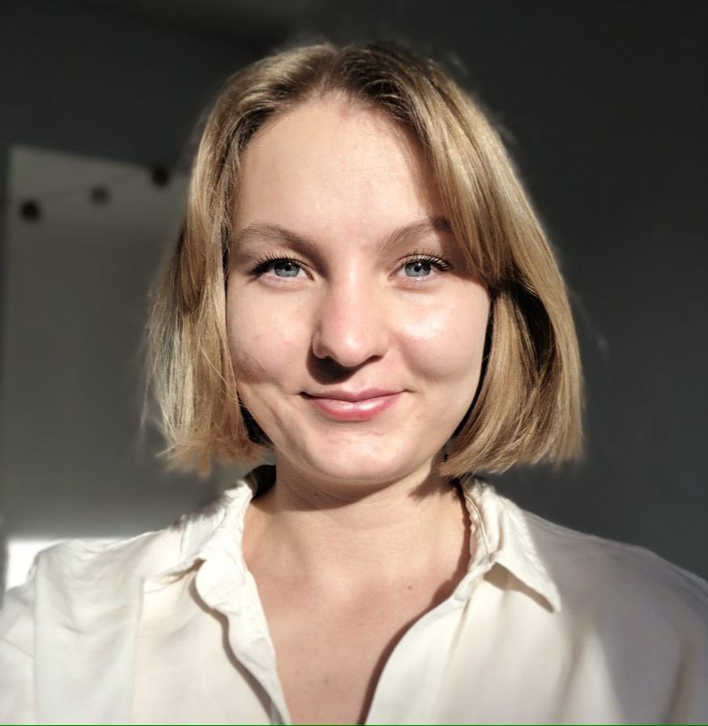
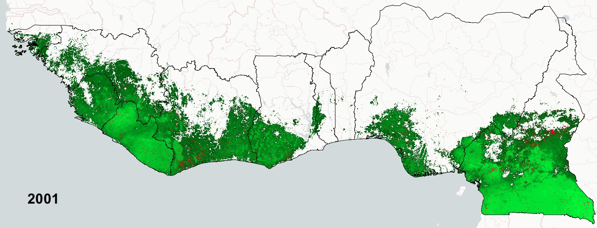
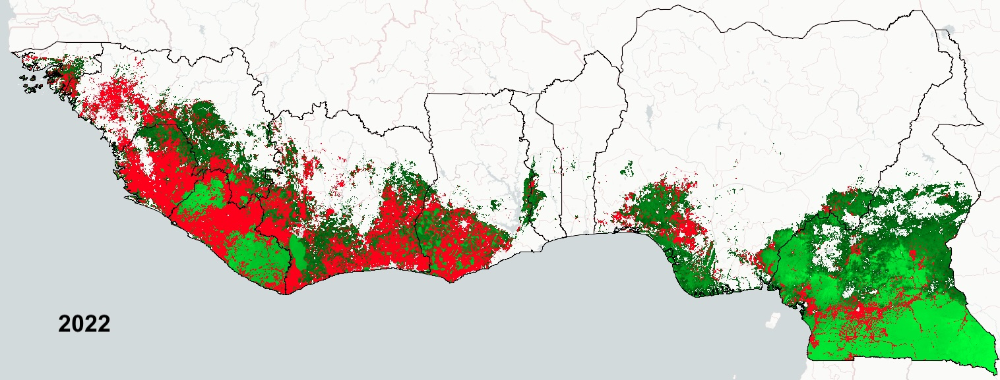

My research interests lie between environmental and development economics, with a focus on water-related issues. During my PhD, I am a teaching assistant at École Normale Supérieure Paris-Saclay.

Research
Beyond Borders: Deforestation, Rainfall Disruptions and Economic Loss in West Africa
with T. Vendryes and J. Wolfersberger
Working Paper
This paper investigates the long-distance externalities of deforestation on economic development in West Africa through the rainfall mechanism. Clouds passing over newly cleared areas accumulate less water, negatively affecting rainfed agriculture along the wind corridor. Using satellite data, we exploit wind patterns' exogeneity, conducting our analysis at the cell level over 21 years of data (2001-2022). Our findings reveal significant negative effects on agricultural productivity and GDP in areas up to 200 km from deforested regions. In particular, deforestation in Ivory Coast since the 2000s has reduced GDP growth by 1.8% compared to the regional average. These results underscore the need for cross-border governance and integrated policy, not only for environmental sustainability but also to mitigate broader economic repercussions.


Does Agricultural Productivity Lead to Capital Accumulation or Re-Location? Evidence from Long-Term Irrigation in India
with D. Blakeslee and R. Fishman
Working Paper
Could India’s Groundwater Use be Weakly Sustainable?
with D. Blakeslee, R. Fishman, and E. Zaveri
Journal of Environmental Economics and Management, R&R